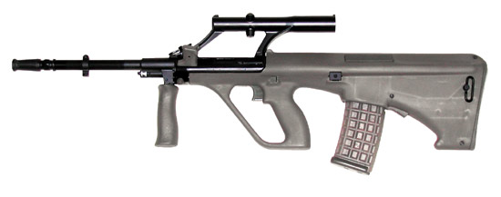

AUG突擊步槍

Steyr AUG（德語：Armee-Universal-Gewehr，直譯：「陸軍通用步槍」）是一款由奧地利槍械製造商斯泰爾-曼利夏於1977年推出的軍用突擊步槍，為史上首款獲正式採用並大量裝備的犢牛式軍用步槍。該槍最早於1978年被奧地利聯邦軍採納為制式步槍，並將其命名為「StG 77」（Sturmgewehr 77；意爲：77型突擊步槍），後來也被多國的軍隊和執法機關所採用。
- AUG運用了跟當代軍用步槍不同的犢牛式佈局設計，使得全槍的長度在不影響彈道表現下比採用傳統佈局的步槍縮短了25％，並同時配有1.5倍放大倍率的光學瞄準鏡。該瞄準鏡頂部設有後備照門，以便槍械在瞄準鏡被破壞後仍可使用。較新的A2及A3型則以皮卡汀尼導軌取代了舊版AUG及A1型的固定式瞄準鏡。
5.56公釐口徑的AUG運用短行程活塞導氣原理，旋轉式槍機方式運作，一般使用30或42發容量半透明彈匣供彈，射手可以快速的檢視子彈存量。9公釐口徑版本則運用較簡單的反衝作用工作方式，供彈具為斯泰爾MPi 69衝鋒槍的25發彈匣。AUG是1970—1980年代期間少數擁有模組化設計的步槍，它的槍管可快速拆卸，並能夠與槍族中的長管、短管和重管互換使用。除較新的A3型外，大部份型號的槍管下方均設有可摺疊式前握把，取代了一般步槍的護木設計。部份較新的衍生型則在槍管上添加了皮卡汀尼導軌安裝平台，取代了原本的前握把。
AUG的控制系統可左右對換。該槍沒有射擊選擇桿，其大約9磅釋放壓力的扳機同時控制射擊模式的選擇，第一段為半自動射擊模式，而扳機繼續扣則進入第二段的全自動射擊模式。該槍的槍機拉柄採用了類似H&K G3步槍及衍生型的可鎖定式設計，即拉到後方可將其卡在上方的鎖槽，由於此時槍機也被固定在後方，裝填彈匣時不會被其妨礙而更流暢，最後射手釋放槍機拉柄時槍機也會一同向前復位，順便從彈匣內推一發子彈上膛。較新的A3型則加入了槍機釋放鈕。
由於設計優異、品質高及性能良好，AUG獲得多國軍警採用。
目前已知奧地利、愛爾蘭共和國、澳洲、紐西蘭、馬來西亞、阿根廷和沙烏地阿拉伯等國的軍隊現在或過去皆以AUG作制式步槍。
在2011年敘利亞內戰當中，自由敘利亞軍的戰士從不明渠道取得了一些AUG並在實戰中投入使用。這批步槍的序編號均被刪去，因此它們的來源仍然成謎。